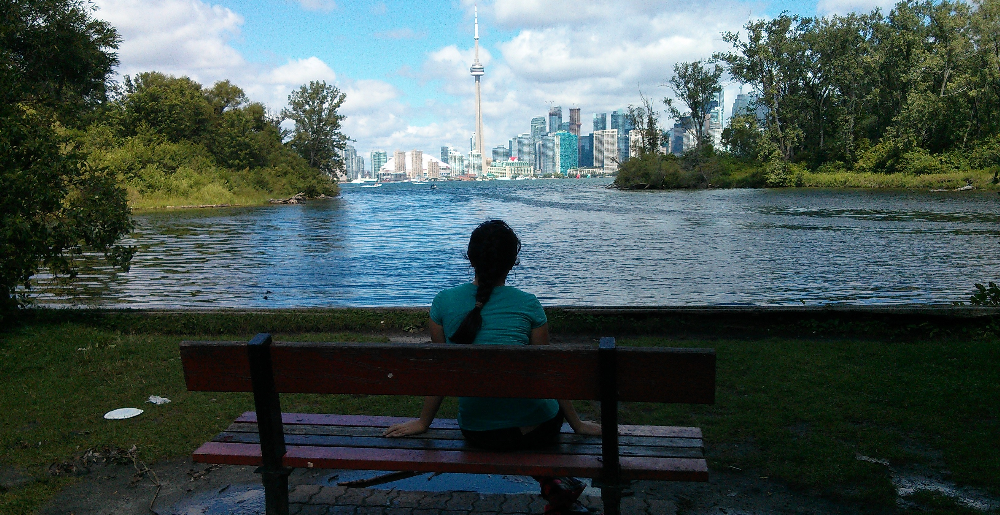
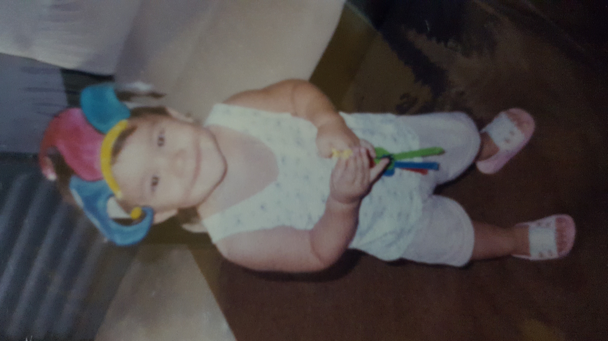
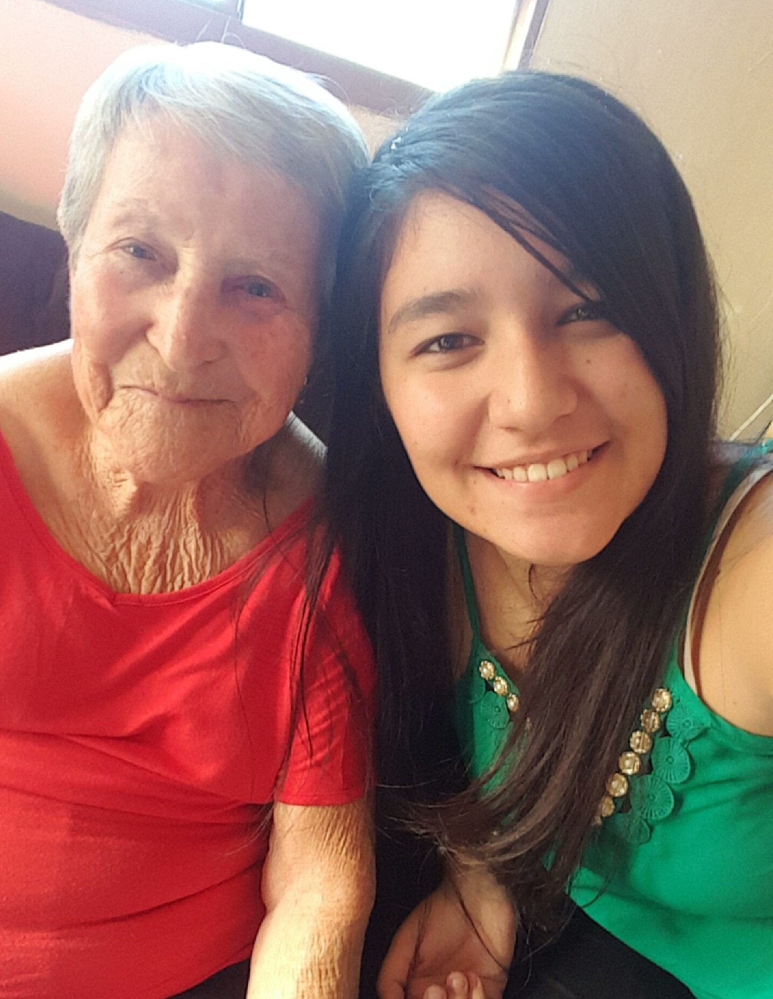
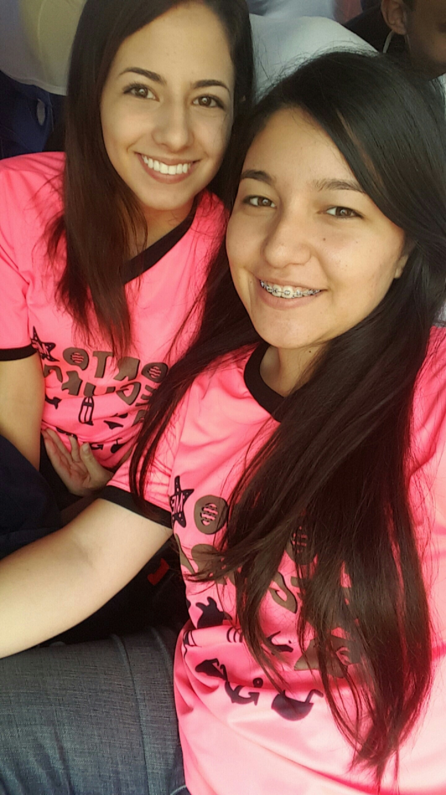
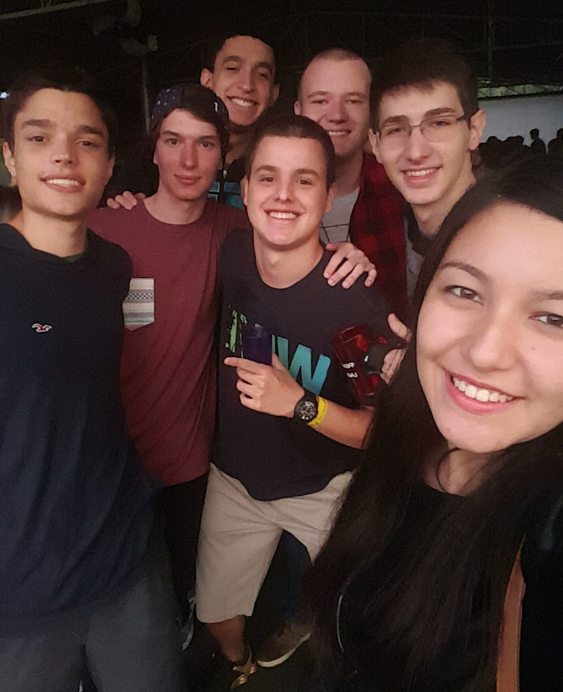
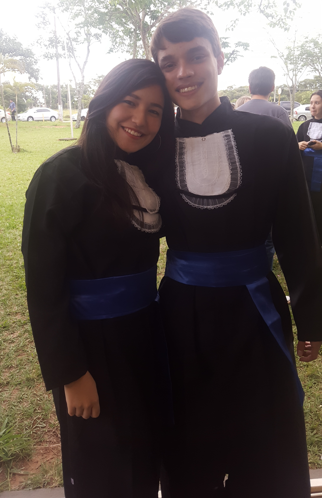

|

Home Hobbies Vida Acadêmica Tania Sanai ShimabukuroNascida em 09 de novembro de 1998 na cidade de Bauru-SP. Atualmente com 18 anos, cursa o 1° ano de Ciência da Computação na Universidade Estadual Paulista "Júlio de Mesquita Filho" (UNESP - Campus Bauru) e é trainee da área de projetos na Empresa Júnior de computação - Jr.com.  Tania, também conhecida como Paçoca, é a filha mais nova de Marilda e Ezio, tendo Mariana como irmã e inspiração. Ambas foram criadas no interior do estado de São Paulo, porém agora, com a mudança de Mariana, se relacionam pela internet apenas. 
No ano de 2017, Tania perdeu uma das pessoas mais especiais de sua vida, algo irreparável, mas era necessário para seu crescimento pessoal. Angelina era sua avó, a qual dividiu quarto com ela por cerca de 5 anos, acompanhou todo seu crescimento, esteve presente em todas as suas maiores conquistas e foi essencial para mimá-la sempre que possível. RIP.  Paçoca é muito apegada a suas amizades, em especial a uma amiga que simplesmente a entende de todas as formas possíveis. Elas gostam das mesmas coisas, exceto que Ana adora CSS, mas Tania consegue superar as diferenças e ter uma amizade muito estável com ela da mesma forma. Se conheceram aos 11 anos e estudaram juntas durante todo o ensino médio.  Mesmo Tania sendo muito amiga de Ana, ela não se entende muito com a maioria das meninas e é por isso que 80% de suas amizades são masculinas, isso é extremamente perceptível.  Tania está em um relacionamento sério e mesmo com as dificuldades de se namorar a distância devido à vida universitária, ela e Thiago estão juntos há um ano. É difícil, mas é possível.  Voltar ao topo da página |